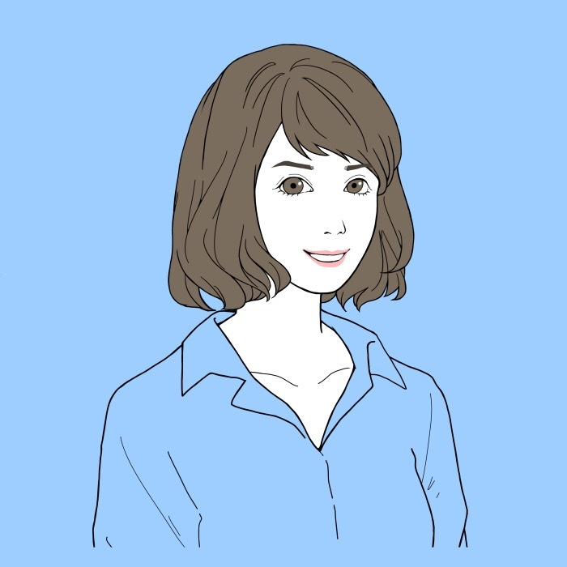

BOOKS
著書


MARIKA — TUTOR / AUTHOR / AI CONSULTANT
中学受験のプロ家庭教師として15年。算数・理科の個別指導から、AI活用・言語化のご相談まで、頭の中を整理するお手伝いをしています。指導・コンサルのご依頼はこのサイトから。
PROFILE

大学院薬学研究科を修了後、ITスタートアップ企業勤務や中学受験大手塾での講師などを経て中学受験の家庭教師として15年以上、算数を中心に子どもたちと保護者に伴走してきました。現在はフリーランスとして、家庭教師・AI活用コンサル・言語化コンサルを行っています。
「難しそう」の入口をほどいて、わかる形に言語化するのが得意です。noteでは2019年から370本以上の記事を執筆。生成AIを相棒にしたKindle出版は4冊になりました。
BOOKS
SERVICES
入り口はいろいろですが、やっていることの根っこはひとつ。頭の中にあるものを言葉にして、「わからない」をほどくことです。こんなこと聞いていいのかな？と思うことでもお気軽にご連絡ください。
オンライン個別指導。算数を中心に、お子さんの「わかった！」と学習習慣づくりに伴走します。
中学受験の親御さん向け。塾選び・家庭学習・成績の見方など、情報の整理と判断のお手伝いをします。
ChatGPTやClaudeを毎日の仕事と暮らしに。非エンジニア目線で、あなたの用途に合わせて伴走します。
「言いたいことがまとまらない」を対話でほどきます。自己紹介・発信・プレゼン・サービス説明の言葉づくりに。
「喋る→AIと形にする」私自身の4冊の経験をもとに、あなたの知見を本にするまでを伴走します。
お子さんとご家庭に合わせた教育書・児童書の選書サービス。どんなサービスかは紹介noteをどうぞ。
料金は、授業もご相談もすべて共通で 50分 6,000円です。2回目以降のカウンセリングには 25分 3,000円の枠もご用意しています。教育ブックコンシェルジュのみ、30分のご相談＋本のリサーチで 5,000円です。
TRACK RECORD
桜蔭／女子学院／神戸女学院／四天王寺（医志コース）／早稲田／浅野／慶應中等部／渋谷幕張／市川／東邦大東邦／栄東（東大クラス）／鴎友学園女子／芝／都立小石川／国府台女子学院／高輪／広尾小石川／頌栄女子学院／江戸川学園取手／田園調布雙葉／東京女学館／明大中野八王子 ほか
帰国生入試：海城／東邦大東邦／立教池袋／三田国際／開智日本橋／成蹊
合格だけが成果ではありません。化学のテストが6点だった生徒さんが、半年で60点に。そんな「わかった！」までの伴走を、いちばん大切にしています。
PLAY
Q.
4 を 4つ と、＋−×÷（ ）だけを使って、10 をつくれますか？
中学受験の教え子たちも夢中になる、数字あそびの定番です。
WRITING & TALKING
note — 日々の気づき・中学受験・AI活用：note.com/marika910
はじめての方には、まずこの3本がおすすめです。
Podcast — たまとまりかの心地よい人生戦略会議（Spotify）→
読み物（準備中） — 中学受験理科の「なぜ」を、薬学出身の目線で大人にも面白くほどくコーナーをこのサイト内に準備中です。
CONTACT
お仕事のご依頼・ご相談は、フォームからお気軽にどうぞ。
中学受験の家庭教師から、AI活用・言語化・Kindle出版のご相談まで承っています。
※フォームが開きます。